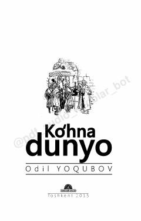

KDAbu Rayhon Beruniy va Ibn Sinoning yoshlik yillariga bag‘ishlangan tarixiy roman.
Ushbu tarixiy romanda buyuk allomalar Abu Rayhon Beruniy va Ibn Sinoning yoshlik yillari, ularning shakllanish davri hamda ilm-fan yo‘lidagi mashaqqatli hayot yo‘li tasvirlangan. Adib ikki daho ijodkorning ijtimoiy muhit va fojiali taqdirini jonli bo‘yoqlarda ochib beradi.